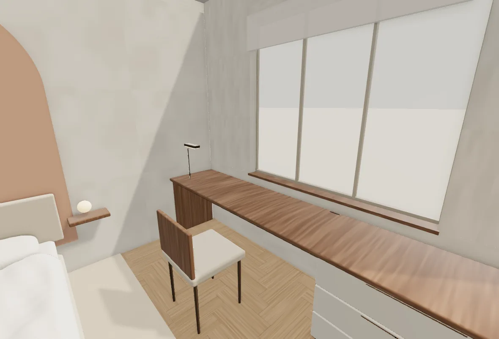
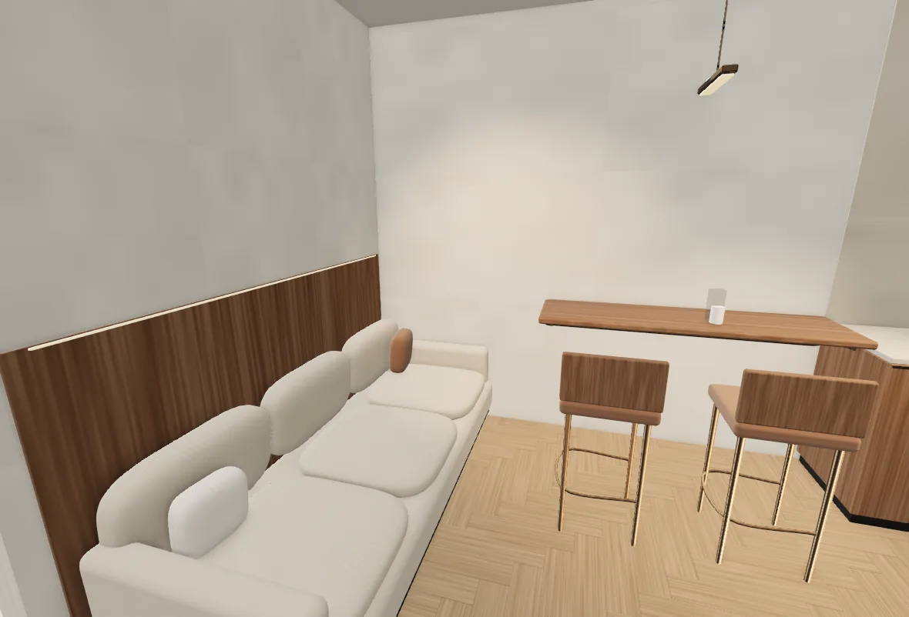
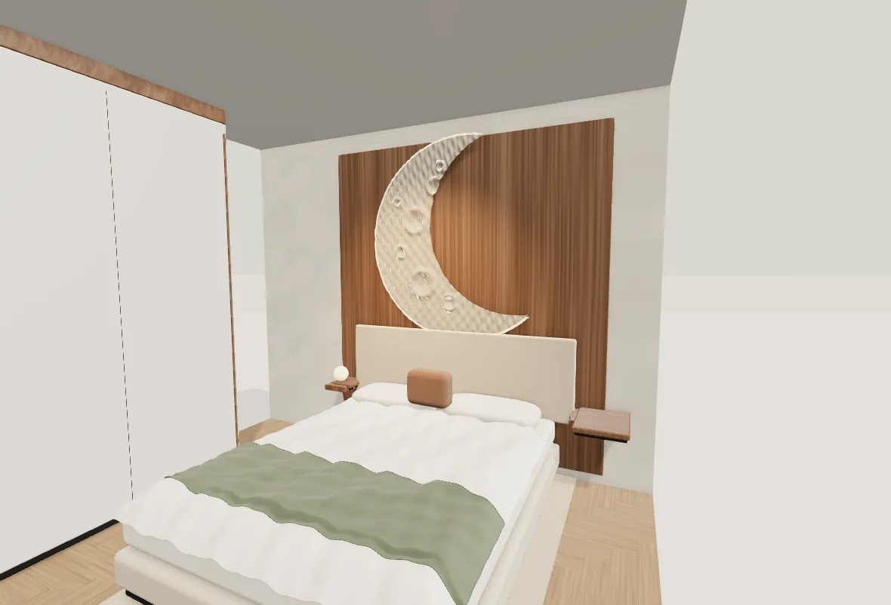
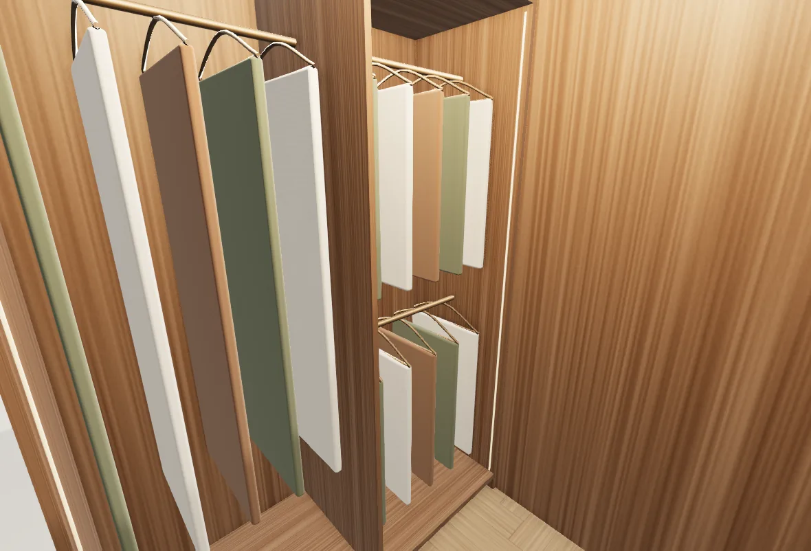
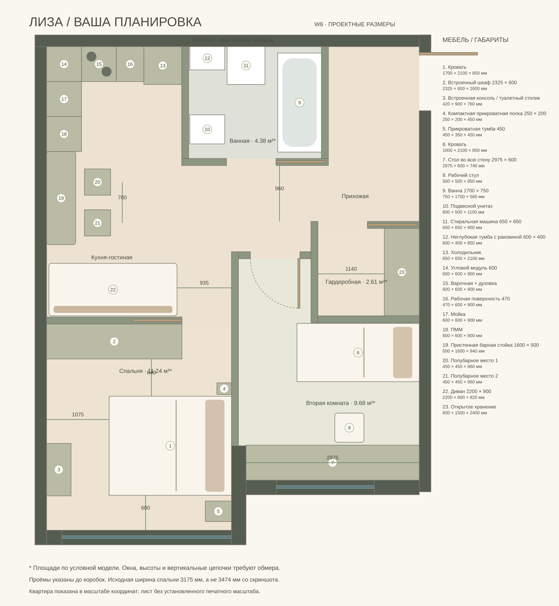
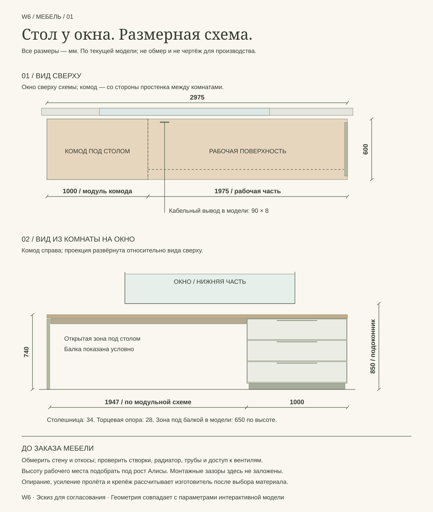

Общее хранение у входа. Личные комнаты у окон.
Место для вещей.
Пространство для жизни.
Одна общая гардеробная у входной зоны, шкаф в спальне и комод Алисы. В детской — непрерывный письменный стол во всю стену с окном. Диван обращён к кухне и барной стойке.
Последний обмер изменённой ванной не приложен. Указанный вами проход у входа около 900 мм ещё нужно сверить с моделью. Ванная сохранена в существующей геометрии. Это отдельный вариант; D и W4 доступны для сравнения.
W6 / Виды из интерактивной модели
Один вариант.
Четыре пространства.
Изображения получены из той же Three.js-модели, которую можно открыть по ссылкам ниже. Нажмите на изображение, чтобы рассмотреть его крупнее.


Целая стена для учёбы и творчества.
Стол 2975 × 600 мм объединяет рабочую поверхность и комод. Оконный проём остаётся открытым; настольная лампа даёт локальный свет.
Открыть эту комнату в 3D ↗

Диван, кухня и два места у стойки.
Мягкий диван обращён к кухне. Деревянная панель со скрытым светом связывает его с пристенной барной стойкой.
Открыть эту комнату в 3D ↗

Хранение встроено в комнату.
Шкаф вдоль входной стены и компактные прикроватные полки. Изголовье, деревянная панель и лунный рельеф собраны в одну композицию.
Открыть эту комнату в 3D ↗

Вещи собраны у входа.
Вид на открытое наполнение: длинная одежда в одной секции, два уровня короткой — в другой. Точный объём хранения нужно сверить с составом вещей.
Открыть эту комнату в 3D ↗

Отдельная гардеробная с рядом глубиной 600 мм и свободной полосой 1140 мм перед ним. Отдельный шкаф из узкой входной зоны убран. Дверь гардеробной сдвигается в перегородку.
Столешница от стены до стены. Со стороны простенка между комнатами — комод шириной 1000 мм с тремя выдвижными ящиками; рабочая часть открыта снизу. Тонкая опора, скрытая усиливающая балка, кабельный вывод и направленный свет. Римская штора оставляет стол свободным.
Встроенный шкаф до линии двери. Дверь сдвигается в стену, компактная прикроватная полка освобождает поворот к кровати. Между шкафом и кроватью остаётся 640 мм: это компактная зона, а не просторный проход.
W6 / Детали мебели
Стол Алисы.
От стены до стены.
На схеме — столешница, три ящика комода, открытая зона для ног, торцевая опора и кабельный вывод. Вид спереди показан из комнаты на окно: комод находится справа, со стороны простенка между комнатами.


Ширина открытой зоны по модульной схеме — 1947 мм, после комода и торцевой опоры. Под столешницей 706 мм, под показанной балкой — 650 мм. Это параметры эскиза: рабочую высоту нужно подобрать под рост Алисы, а усиление и опирание — рассчитать после выбора материала.
В модели подоконник находится на высоте 850 мм, а верх столешницы — 740 мм. Разница 110 мм относится к отметкам модели и не подтверждает свободное открывание реального окна. До заказа нужны размеры створок, откосов, радиатора и труб.
Мебель и связи
Каждой вещи — своё место.
| Элемент | Размер модели | Решение |
|---|---|---|
| Диван | 2200 × 900 мм | Лицом к кухне; основной проход сбоку 935 мм |
| Барная стойка | 1600 × 500 мм | Пристенная, два места с шагом 700 мм |
| Стол Алисы | 2975 × 600 × 740 мм | Комод 1000 мм со стороны простенка, направленный рабочий свет |
| Шкаф взрослых | 2325 × 600 мм | Раздвижные фасады, встроенный объём |
| Гардеробная | 1740 × 1500 мм | Общая, с отдельным входом из холла |
Что сверить по обмеру.
Перед изготовлением стола нужны точная длина стены, высота подоконника, положение радиатора и траектория створок. В модели подоконник находится на 850 мм, стол — на 740 мм. Открытая нижняя часть сохраняет место для отопления; расположение комода и вентиляционные зазоры окончательно определяются по фактическому радиатору. Высоту рабочего места и кресло подобрать под рост Алисы.
Размеры новых перегородок, кассеты раздвижных дверей и ванную нужно привязать к последнему обмеру. Инженерные листы и визуализации на главной странице относятся к D / 01, а не к W6.